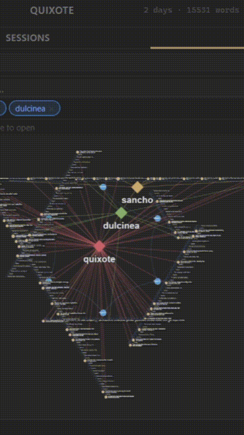

GOMBRO
Inventive writing, nothing else.
A writing environment for fiction, poetry, and literary non-fiction. Not for academic texts or self-help.

Scope
“Gombro is not made for academic texts or self-help. It is made for inventive writing.”
No AI suggestions. No rewriting. No grammar correction. No optimization. No noise.
You write. That is enough.
Modes
- Sentence-based writing; '.' settles, Enter breathes.
- Paragraph-first editing with atomic autosave.
- Bilingual toggle (EN / ES / PL) without reload.
- Focused search by paragraph and sentence.
- DOCX export per project, clean folders.
Silent demo

Key features
- Borgian Algebra — write with open variants inline. No other writing tool does this.
- Cut-up (Baraja) — shuffle paragraphs with chance. Undo anytime.
- Projects → Sessions → Paragraphs → Versions. A structure built for literary writing.
- Full-text search by paragraph and sentence.
- Saved collections — one click to re-run any search.
- Per-paragraph version history — every draft recoverable.
- Sentence isolation mode — one sentence at a time.
- Session post-it notes — anchored to each session (F4).
- Graph view — map paragraph relationships visually.
- Hashtags — tag paragraphs, find them instantly.
- Command-driven interface. No toolbars, no menus.
- Import .docx, .md, .txt — each section becomes a session.
- Export to .docx or .md from the explorer.
- Zen mode — full screen, no chrome.
Gombro vs
About Raul Lilloy
Editor who built Gombro for himself. Writes and teaches writing at incubook.com. Author of the novel Kolón.
Not for everyone
Not for academic texts. Not for self-help. Not for structured argument.
For writing that does not obey.
Philosophy
“Writing resists improvement. It exists between form and its deformation.”
Unverified testimonies
“If I had known it, I would have rewritten Don Quixote.” — Miguel de Cervantes
“With Gombro, Waiting for Godot would have ended.” — Samuel Beckett
“Dadaism would have been something else with Gombro.” — Jacques Vaché
“I wrote half of Ferdydurke using Gombro.” — Witold Gombrowicz
“Beatriz Viterbo wrote her deceptions using Gombro.” — Jorge Luis Borges
“I would have written Finnegans Wake in 15 months instead of 15 years.” — James Joyce
Descarga
Esta es una beta. La prueba diaria define el producto.
Windows only. 60-day free trial, no credit card required.
Free trial · Windows
Enter your email to download
60-day free trial. No credit card required.